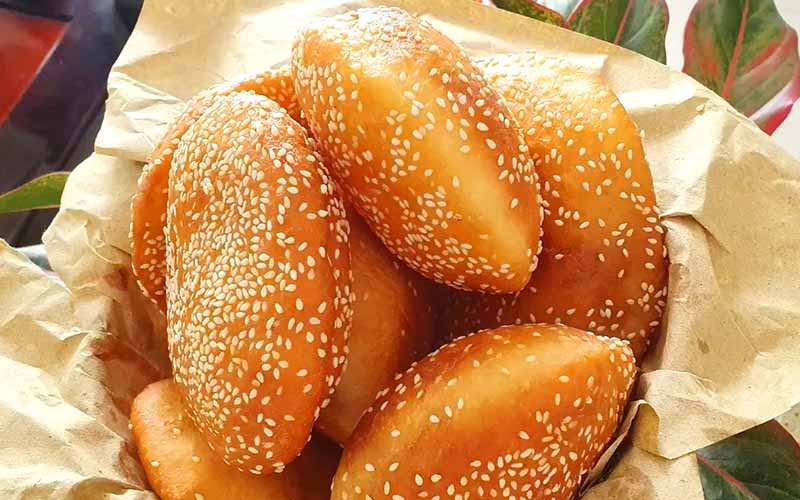
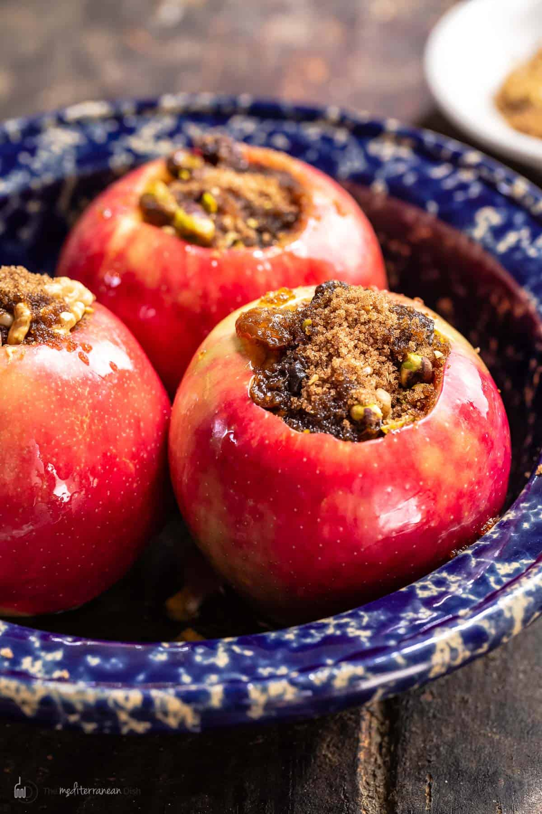

Banh Tieu

Description
Banh Tieu is a hollow Vietnamese donut, super soft and tender and coated with crispy sesame seeds.
Vietnamese donuts aren't too sweet, and with the hollow inside, you can fill it with anything you want. Even though traditionally it's eaten as is.
Ingredients
- 2 cups all-purpose flour
- 1/4 cup sugar
- 3/4 tsp instant yeast
- 3/4 tsp baking powder
- 1/4 tsp salt
- 10 tbsp unsweetened almond milk (room temp)
- 1/2 tsp vanilla extract
- 1/4 cup white sesame seeds
- 1 1/2 cup of oil for frying
Steps
- whisk together dry ingredients - flour, sugar, instant yeast, baking powder, and salt
- add wet ingredients - pour in milk and vanilla extract, mix with a spoon until dough forms
- knead - knead until smooth, for 5-7 minutes
- proof the dough - cover with plastic film, let it proof for 1hr 30min, or until double in size
- divide into balls - punch to deflate, divide into six balls
- roll into sesame seeds - roll one ball at a time into the sesame seeds, slightly pressing down so it sticks
- flatten into discs - flatten each ball to about 3-4mm thick
- heat oil - heat oil in deep saucepan over medium heat. dip wooden chopstick in- if bubbles form around chopstick, oil is hot enough
- deep fry - carefully add one disc of dough to oil at a time. flip every 5-7 seconds
- remove from oil - remove once golden brown, transfer to plate with paper towel to remove excess oil. repeat with remaining discs
- let banh tieu cool for at least five minutes. enjoy fresh, or up to 2 days in airtight container at room temperature
Baked Apple

Description
Baked apples are soft and sweet, and quick and easy to make.
Prepared stuffed or sliced, it's easy to make as a quick treat for the holidays.
Ingredients
- 3-4 large baking apples (like honeycrisp)
- 1/4 cup brown sugar
- 1/2 cup lightly crushed nuts of choice
- 1/4 cup chopped dried fruit of choice (optional)
- 3/4 tsp ground cinnamon
- 1/4 tsp cardamom
- 1-2 tbsp extra virgin olive oil
Steps
- heat the oven - place the rack in the center of the oven and preheat to 375 F
- make sugar/cinnamon mixture - combine sugar, nuts, fruit, cinnamon, and cardamom in small bowl. mix well
- core the apples - use an apple corer or sharp paring knife to remove the core, making room for the mixture
- stuff the apples - arrange the apples in a baking dish, spoon in the brown sugar and nut mixture all the way
- add the oil and hot water - pour about 1-2 tbsp of oil all over apples. pour 3/4-1 cup of boiling water from the side of the dish
- bake - place the dish in the oven and bake for 40-45 minutes or until cooked through and tender
- serve - remove from oven, baste with brown sugar sauce from bottom of pan. serve as is or add vanilla ice cream and serve.